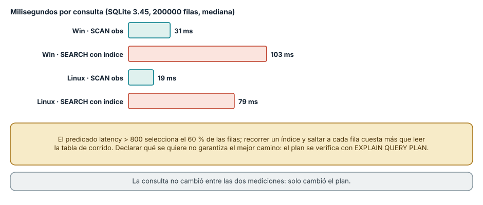
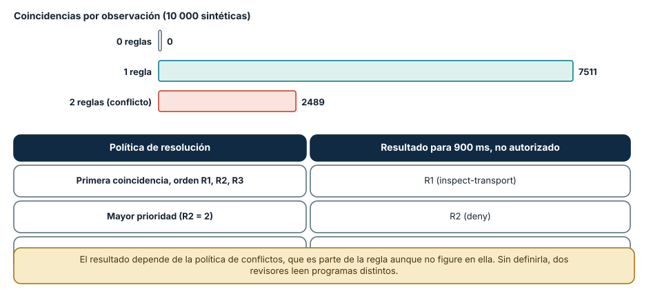
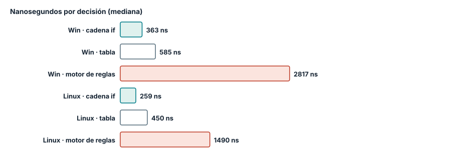

← SE-076 — Programación funcional, composición e inmutabilidad · ↑ Parte 06 · 📚 Índice completo · 🌐 Portal · SE-078 — Programación lógica y resolución →
Punto profesional y fundamento pedagógico
Punto profesional. La clase existe para expresar el qué mediante relaciones o restricciones y reconocer el motor que decide el cómo.
Por qué aparece aquí. Se sitúa después de Programación funcional, composición e inmutabilidad y antes de Programación lógica y resolución: convierte el conocimiento anterior en una decisión observable que la clase siguiente podrá reutilizar. La continuidad se comprueba en el artefacto, no por compartir vocabulario.
Error conceptual que debe corregir. Confundir declarativo con ausencia de orden o costo.
Secuencia de aprendizaje. Antes de leer la solución, el estudiante predice el resultado del caso normal y del error conceptual anterior. Luego explica un caso resuelto paso a paso, construye un contraejemplo que cambie la decisión y, sin consultar el texto, reconstruye el mecanismo y lo aplica a una entrada nueva. La secuencia usa predicción, explicación propia, contraste y recuperación. ICAP distingue participación de construcción de conocimiento; How People Learn II exige conectar conocimiento previo, contexto y transferencia; la práctica de recuperación respalda producir de nuevo la explicación tras una demora; y Education for Life and Work exige devolución que explique la causa del error.
Evidencia de aprendizaje. Declarative-model.md con regla, consulta, plan observado y contraejemplo. Debe contener predicción previa, observación, explicación causal, contraejemplo, criterio de aceptación y una nota de qué dato haría cambiar la conclusión.
Límite de la conclusión. La sintaxis declarativa no garantiza optimización.
Trazabilidad fuente → afirmación
| Fuente primaria u oficial | Afirmación que respalda | Lo que no prueba |
|---|---|---|
| SWI-Prolog Reference Manual | Hechos, reglas, unificación, búsqueda y límites operacionales; autoridad: SWI-Prolog project | No demuestra por sí sola que el artefacto del estudiante sea correcto. |
| SWEBOK Guide v4.0a | Construcción, diseño y fundamentos profesionales; autoridad: IEEE Computer Society | No demuestra por sí sola que el artefacto del estudiante sea correcto. |
Antes de empezar
Esta clase continúa el motor de reglas comparado de la Parte 06. Recupera la evidencia de la clase anterior, añade una decisión propia de Programación declarativa y basada en reglas y deja un artefacto que la clase siguiente deberá consumir. La pregunta activa es: ¿Qué significa declarar una relación sin fijar todos los pasos para obtenerla?
Prerrequisitos
- Haber completado la clase anterior o reconstruir su contrato y evidencia.
- Python 3.11 o posterior, terminal, editor y Git; un segundo runtime es opcional y debe declararse.
- Trabajar con fixtures sintéticos: ninguna observación necesita datos de una persona o sistema real.
Problema auténtico
Las reglas del motor de reglas comparado cambian con frecuencia y están enterradas entre bucles y asignaciones. Producto puede describir condiciones, pero no auditar la precedencia ni detectar conflictos sin leer control imperativo.
Objetivos observables
Al terminar podrás explicar los cinco mecanismos de esta clase, predecir su comportamiento antes de ejecutar, construir un caso normal y uno límite, diagnosticar el fallo controlado, comparar una alternativa y entregar evidencia que otra persona pueda reproducir.
Mapa conceptual
Ver la notación fuente del diagrama
flowchart LR
N1[Intención declarada / estrategia de ejecución] --> N2[Hechos, reglas / condiciones] --> N3[Prioridad / conflictos] --> N4[Evaluación incremental / explicación] --> N5[Límites de lenguajes declarativos]
N5 -->|fallo o cambio| N1El mapa se lee como una cadena de razonamiento, no como fases obligatorias del runtime. La flecha de retorno indica que un fallo o cambio de requisito obliga a revisar el modelo inicial; no autoriza a parchear solo la última salida.
Temas y por qué importan
| Tema | Por qué cambia una decisión profesional | Evidencia mínima |
|---|---|---|
| Intención declarada y estrategia de ejecución | Una descripción declarativa especifica qué relación debe cumplirse y delega parte del cómo a un motor. | Predicción, traza causal y contraejemplo de Intención declarada y estrategia de ejecución en declarative-model.md |
| Hechos, reglas y condiciones | Un hecho representa una observación; una regla deriva una consecuencia cuando su antecedente se satisface. | Predicción, traza causal y contraejemplo de Hechos, reglas y condiciones en declarative-model.md |
| Prioridad y conflictos | Dos reglas pueden habilitar acciones incompatibles. | Predicción, traza causal y contraejemplo de Prioridad y conflictos en declarative-model.md |
| Evaluación incremental y explicación | Un motor puede reevaluar todo o actualizar solo consecuencias afectadas por hechos nuevos. | Predicción, traza causal y contraejemplo de Evaluación incremental y explicación en declarative-model.md |
| Límites de lenguajes declarativos | Expresar estado temporal, efectos externos o algoritmos irregulares puede volverse difícil. | Predicción, traza causal y contraejemplo de Límites de lenguajes declarativos en declarative-model.md |
Conceptos y decisiones
1. Intención declarada y estrategia de ejecución
Una descripción declarativa especifica qué relación debe cumplirse y delega parte del cómo a un motor. SQL, CSS y sistemas de reglas no son equivalentes, pero comparten esa separación. El costo y el orden no desaparecen: quedan en el planificador, la especificidad o la estrategia de resolución.
2. Hechos, reglas y condiciones
Un hecho representa una observación; una regla deriva una consecuencia cuando su antecedente se satisface. Las reglas necesitan vocabulario, tipos y alcance temporal. Una condición ambigua como high_latency debe vincularse a unidad, umbral y fuente de medición.
3. Prioridad y conflictos
Dos reglas pueden habilitar acciones incompatibles. Salience, orden textual o una política explícita deciden cuál vence. Confiar en un orden accidental hace que añadir una regla cambie otra sin señal; el motor de reglas comparado conserva una matriz de conflictos y exige desempate documentado.
4. Evaluación incremental y explicación
Un motor puede reevaluar todo o actualizar solo consecuencias afectadas por hechos nuevos. La segunda opción mejora escala pero mantiene dependencias internas. Cada recomendación debe incluir reglas activadas y hechos usados para que una persona pueda revisar la decisión.
5. Límites de lenguajes declarativos
Expresar estado temporal, efectos externos o algoritmos irregulares puede volverse difícil. Insertar funciones opacas dentro de reglas recupera poder pero pierde análisis y portabilidad. Una capa declarativa sirve cuando el dominio comparte un vocabulario estable y auditable.
Declarar qué se quiere no garantiza el mejor camino
Una consulta SQL es declarativa: dice qué filas se necesitan, no cómo recorrerlas. El motor elige un plan. Con 200 000 filas de observaciones, la consulta select count(*) where latency > 800 and auth = 1 (que devolvió 60 000) usó un SCAN de toda la tabla en 31 ms (Windows) y 19 ms (Linux). Tras crear un índice sobre la latencia, EXPLAIN QUERY PLAN informó SEARCH obs USING INDEX ix (latency>?), y la misma consulta, sin tocarla, tardó 103 ms y 79 ms: entre tres y cuatro veces más lenta.
La causa es la selectividad. El predicado latency > 800 selecciona el 60 % de las filas; recorrer un índice y saltar a cada fila de la tabla cuesta más que leerla de corrido. Un índice ayuda cuando el predicado descarta la mayoría de las filas. La documentación de SQLite lo anticipa: el planificador estima costos, y las estimaciones pueden equivocarse sin estadísticas actualizadas. La lección para el paradigma es doble: lo declarativo traslada el «cómo» al motor, y por eso el plan (aquí EXPLAIN QUERY PLAN) es una evidencia que hay que mirar, no un detalle de implementación.

Cómo leer la figura. Las barras teal son el plan de recorrido completo y las coral el plan con índice; la consulta es la misma en ambos casos. Dónde deja de valer: el resultado depende de la selectividad del predicado y de SQLite 3.45 con una base en memoria; con un predicado que descartara el 99 % de las filas, el índice ganaría. Otros motores (PostgreSQL, por ejemplo) tienen estadísticas y planificadores distintos que no se probaron.
Cuando dos reglas se activan a la vez
Un sistema basado en reglas tiene una pregunta que el código imperativo responde por la posición de las líneas: ¿qué ocurre cuando varias reglas aplican? En el motor de la clase, con tres reglas (R1: latencia mayor que 800 recomienda inspección; R2: latencia mayor que 800 y sin autorización recomienda denegar; R3: latencia hasta 800 no actúa) y diez mil observaciones aleatorias, ninguna quedó sin regla, 7511 activaron una y 2489 activaron dos. Esas 2489 son el espacio de conflicto.
Con la política «primera coincidencia», una observación de 900 ms sin autorización dio R1 en el orden original y R2 en el orden invertido; con la política «mayor prioridad» dio R2 en ambos. Moraleja: la política de resolución de conflictos es parte del significado de las reglas aunque no figure en ninguna, y un cambio de orden en una lista que parece un conjunto altera decisiones. Se documenta, se prueba con las observaciones que activan varias reglas y se mide cuántas observaciones caen en conflicto, que es un indicador de salud del conjunto.

Cómo leer la figura. Las barras cuentan observaciones por número de reglas activadas; la tabla muestra la decisión para el mismo caso según la política. Dónde deja de valer: las observaciones son sintéticas y uniformes, no de producción; el motor no usa un algoritmo de encadenamiento hacia delante como Rete, que organiza reglas de forma eficiente para miles de ellas.
Tres codificaciones de la misma decisión
La misma decisión (denegar, inspeccionar o no actuar) se escribió como cadena de if, como tabla de decisión por tupla de booleanos y como motor que evalúa reglas como datos. Los costos por decisión en Windows fueron 363 ns, 585 ns y 2817 ns; en Linux, 259, 450 y 1490 ns. El motor cuesta entre cinco y ocho veces más que la cadena.
Lo que compra ese costo es otra cosa: las reglas son datos que se pueden listar, contar, probar una por una y cambiar sin editar la lógica de evaluación. Una cadena de if que crece a 80 ramas se vuelve ilegible y nadie sabe cuántos casos distintos cubre; una tabla de reglas permite preguntar qué observaciones no activan ninguna. Cuando las reglas son pocas y estables, la cadena es la mejor opción. Cuando cambian a menudo, las revisa gente que no programa o requieren auditoría, el costo de interpretación se justifica.

Cómo leer la figura. Cada barra es la misma decisión con una codificación distinta; el motor de reglas paga la interpretación. Dónde deja de valer: el microbenchmark evalúa una observación sin E/S; en un servicio real el costo de la regla suele ser despreciable frente a la red. Lo que no se midió es el costo humano de mantener 80 ramas frente a 80 filas.
Definiciones de trabajo
- intención declarada y estrategia de ejecución: una descripción declarativa especifica qué relación debe cumplirse y delega parte del cómo a un motor.
- hechos, reglas y condiciones: un hecho representa una observación; una regla deriva una consecuencia cuando su antecedente se satisface.
- prioridad y conflictos: dos reglas pueden habilitar acciones incompatibles.
- evaluación incremental y explicación: un motor puede reevaluar todo o actualizar solo consecuencias afectadas por hechos nuevos.
- límites de lenguajes declarativos: expresar estado temporal, efectos externos o algoritmos irregulares puede volverse difícil.
Las definiciones son operativas para el motor de reglas comparado. No convierten términos con historia más amplia en sinónimos y deben contrastarse con la documentación primaria enlazada al final.
Ejemplo mínimo
rules = [
{"when": {"authorized": True, "latency_ms_gte": 800},
"then": "inspect-transport", "priority": 20},
{"when": {"dns_failed": True},
"then": "inspect-dns", "priority": 30},
]Antes de ejecutar, predice estado, resultado y error. Después registra versión, comando y salida. Si el fragmento es pseudocódigo o pertenece a otro lenguaje, etiquétalo como tal y no afirmes que fue ejecutado.
Ejemplo profesional
En el motor de reglas comparado, una recomendación contiene acción, evidencia usada, versión de política y explicación. La implementación de esta clase debe conservar ese contrato aunque cambie la forma interna. El caso profesional no pregunta únicamente si devuelve una cadena: pregunta quién puede producirla, qué estado observa, cómo falla y qué rastro permite disputar una decisión incorrecta.
Compara el caso normal con autorización falsa, evidencia incompleta, empate y repetición. Un mecanismo es apropiado cuando esas diferencias quedan visibles y localizadas; es peligroso cuando dependen de orden accidental, estado oculto o una convención que el consumidor no puede conocer.
Práctica guiada
- Copia el contrato de entrada y salida antes de escribir implementación.
- Predice el caso normal y un límite; identifica la invariante que no puede romperse.
- Implementa la versión mínima sin I/O dentro del núcleo.
- Ejecuta el caso y conserva comando, versión y salida bajo
evidence/. - Introduce el fallo controlado, reduce la reproducción y formula dos hipótesis rivales.
- Corrige la causa, añade regresión y ejecuta el conjunto completo.
- Compara con otro paradigma o lenguaje indicando qué semántica se preserva.
Ejercicios
- Plan: crea una tabla de 100 000 filas, ejecuta
EXPLAIN QUERY PLANde una consulta con un predicado que descarta el 99 % de las filas, compara con y sin índice y explica el resultado frente al de la clase. - Conflictos: cuenta cuántas de tus observaciones de prueba activan más de una regla y escribe la política que las resuelve.
- Cobertura: encuentra una observación válida que no active ninguna regla en tu conjunto y decide si falta una regla o una regla por defecto.
- Codificación: convierte tu cadena de condiciones a una lista de reglas como datos y comprueba con una prueba diferencial que ambas dan lo mismo en 10 000 entradas.
Reto verificable
Entrega implementación, fixtures, pruebas y un informe corto. Se aprueba si otra persona ejecuta desde checkout limpio, obtiene los mismos resultados y puede relacionar cada rama o transformación con una regla del dominio. No se aprueba por cantidad de archivos ni por usar la sintaxis característica del paradigma.
Caso conductor
El motor de reglas comparado recibe una observación autorizada, evalúa reglas y devuelve una recomendación explicable. En esta clase, ejecuta el caso latency_ms=900, el límite latency_ms=800, el contraejemplo authorized=false y una entrada incompleta. Cambia después una sola regla y revisa qué archivos, pruebas y trazas debieron modificarse. Esa superficie de cambio alimenta la comparación final de la parte.
Preguntas frecuentes
¿Declarativo significa que no hay orden?
No siempre. SQL no fija el orden de evaluación, pero un sistema de reglas de «primera coincidencia» sí lo fija, y la clase mostró que invertir la lista cambió una decisión. Hay que saber qué política usa cada motor.
¿Por qué un índice puede hacer más lenta una consulta?
Porque acceder a muchas filas por el índice implica saltos aleatorios que cuestan más que leer la tabla secuencialmente. El índice conviene cuando el predicado selecciona pocas filas.
¿Cuándo conviene sacar las reglas del código?
Cuando cambian con más frecuencia que el código, las revisa quien no programa o hay que auditar cuáles se aplicaron. Si son tres y estables, una cadena de condiciones es más simple.
¿Cómo sé si mis reglas son completas?
Generando entradas (incluidas las inválidas) y contando cuántas activan cero, una o varias reglas. En la clase, ninguna de 10 000 quedó sin regla, pero un dato None lanzó TypeError: la completitud también incluye los datos que no son del tipo esperado.
Fallo controlado y diagnóstico
Crea dos reglas de igual prioridad que recomiendan acciones incompatibles. Verifica que el motor no dependa del orden del archivo: debe devolver conflicto explícito o aplicar un desempate publicado.
Registra síntoma, entrada mínima, hipótesis, observación que descarta cada hipótesis, causa, corrección y prueba de regresión. No cambies simultáneamente implementación, fixture y expectativa.
Práctica: ejecuta la regla R1 con una observación cuya latencia es None. Síntoma esperado: TypeError: '>' not supported between instances of 'NoneType' and 'int', que escapa del motor en lugar de producir una decisión de rechazo. Hipótesis rivales: (a) la regla está mal escrita; (b) falta una regla de validación previa. Observación que las separa: una observación válida pasa; una incompleta falla antes de evaluar reglas. Corrección: una regla de mayor prioridad (R0, rechazo por incompletitud) o una validación antes del motor. Regresión: una prueba por cada campo ausente o de tipo incorrecto, con resultado reject-incomplete.
Errores comunes y cómo corregirlos
| Síntoma | Causa | Corrección |
|---|---|---|
| Cambia una decisión al reordenar reglas | Política de conflicto de «primera coincidencia» no documentada | Declarar la política y probar las observaciones en conflicto |
| La consulta empeora al crear un índice | Predicado poco selectivo | Revisar EXPLAIN QUERY PLAN y medir antes de conservarlo |
Una observación incompleta lanza TypeError | No hay regla ni validación para datos ausentes | Añadir una regla de rechazo por incompletitud antes de las demás |
| Nadie sabe cuántos casos cubre el conjunto | Reglas escritas como ramas dispersas | Representarlas como datos y contar coincidencias |
| El motor es lento para una carga alta | Interpretación de reglas en cada decisión | Medir y compilar o precalcular solo si es el cuello de botella |
Entorno y archivos clave
work/SE-077/
├── README.md
├── rule_engine/
│ ├── domain.py
│ └── se_077.py
├── fixtures/cases.json
├── tests/test_se_077.py
└── evidence/diagnosis.mdEl README declara plataforma, runtimes, comandos, limpieza y límites. Evita dependencias externas cuando la biblioteca estándar permita observar el mecanismo; si agregas una, fija procedencia y versión.
Seguridad, ética y accesibilidad
- la autorización forma parte del dominio y no se infiere por ausencia de rechazo;
- no uses
eval, reglas descargadas ni serialización insegura; - limita colas, recursión, tamaño de entrada y tiempo de evaluación;
- redacta trazas y conserva una explicación textual además de color o animación;
- una recomendación automatizada debe poder revisarse, impugnarse y corregirse;
- respeta licencias de ejemplos y atribuye adaptaciones.
Puente hacia el trabajo con agentes
Las políticas de un agente (qué herramientas puede llamar, qué requiere aprobación) son reglas, y muchas organizaciones las expresan como datos declarativos en lugar de código. Lo aprendido aquí aplica de forma directa: la política de conflicto debe estar explícita (¿gana la denegación o la primera coincidencia?), las entradas incompletas deben producir un rechazo y no una excepción, y el motor debe poder explicar qué regla decidió. Las partes de seguridad agentic y de gobernanza retoman las políticas como datos auditables.
Transferencia
Traslada un fixture al segundo modelo o lenguaje. Compara representación de ausencia, error, mutabilidad, orden y cancelación. La transferencia está lograda cuando el contrato se conserva y las diferencias están explicadas, no cuando la sintaxis se parece.
Evaluación y evidencia
| Criterio | Evidencia para aprobar |
|---|---|
| comprensión | explicación causal de los cinco mecanismos |
| corrección | normal, límite, inválido y contraejemplo |
| diseño | estado, efectos y contrato localizables |
| diagnóstico | reproducción mínima y regresión |
| transferencia | comparación semántica, no estética |
| reproducibilidad | versiones, comandos, salida y límites |
Fuentes
- Python Language Reference — Semántica de sentencias, funciones, clases, generadores y corrutinas; autoridad: Python Software Foundation.
- The Rust Programming Language — Ownership, enums, traits, errores y concurrencia sin carreras de datos; autoridad: Rust project.
- SWI-Prolog Reference Manual — Hechos, reglas, unificación, búsqueda y límites operacionales; autoridad: SWI-Prolog project.
- ReactiveX Observable Contract — Notificaciones, terminación, errores y control de flujo observable; autoridad: ReactiveX project.
- Erlang System Documentation: Processes — Procesos, buzones, envío de mensajes, enlaces y monitores; autoridad: Erlang/OTP project.
- SWEBOK Guide v4.0a — Construcción, diseño y fundamentos profesionales; autoridad: IEEE Computer Society.
Fuentes verificadas para las mediciones de esta clase (enlaces comprobados con curl el 2026-11-13):
- SQLite: EXPLAIN QUERY PLAN y El planificador de consultas: cómo se elige y se informa un plan; respaldan la figura 1.
- Módulo
sqlite3de Python: API usada en el experimento. - Forgy, C. L. (1982), «Rete: A fast algorithm for the many pattern/many object pattern match problem», *Artificial Intelligence* 19(1), doi:10.1016/0004-3702(82)90020-090020-0): encadenamiento hacia delante eficiente; contexto de la figura 2.
- Codd, E. F. (1970), «A Relational Model of Data for Large Shared Data Banks», *Communications of the ACM* 13(6), doi:10.1145/362384.362685: origen del modelo declarativo relacional. El editor devolvió 403 a
curl, por lo que este DOI no se verificó por red.
Cada fuente respalda el mecanismo indicado; ninguna demuestra que la implementación del motor de reglas comparado sea correcta. Esa afirmación depende de fixtures, pruebas, trazas y revisión reproducible.
Límites y siguiente paso
Una tabla de reglas no prueba consistencia ni completitud. La siguiente clase usa unificación y búsqueda para estudiar resolución lógica y sus costos.
Glosario
- intención declarada y estrategia de ejecución: una descripción declarativa especifica qué relación debe cumplirse y delega parte del cómo a un motor.
- hechos, reglas y condiciones: un hecho representa una observación; una regla deriva una consecuencia cuando su antecedente se satisface.
- prioridad y conflictos: dos reglas pueden habilitar acciones incompatibles.
- evaluación incremental y explicación: un motor puede reevaluar todo o actualizar solo consecuencias afectadas por hechos nuevos.
- límites de lenguajes declarativos: expresar estado temporal, efectos externos o algoritmos irregulares puede volverse difícil.
← SE-076 — Programación funcional, composición e inmutabilidad · ↑ Parte 06 · 📚 Índice completo · 🌐 Portal · SE-078 — Programación lógica y resolución →